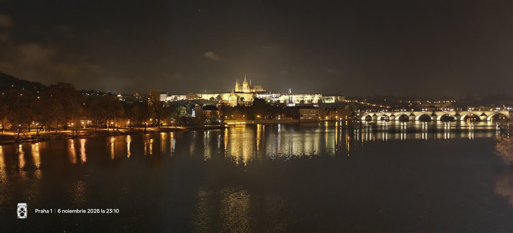

Inspirație pentru următoarea plecare
Jurnal de city break
Trasee pe care le poți urma în ritmul tău, locuri bune de descoperit și sfaturi practice pentru weekenduri mai reușite.

Cehia · Ghid de 2 zile
Praga în 2 zile: poduri, panorame și pauze bune
De la Orașul Vechi la Vyšehrad, două trasee pentru un weekend cu arhitectură, cafea și bere cehească.